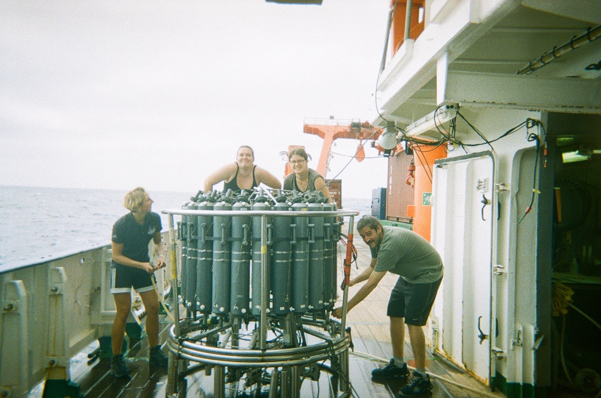

Research Cruise R/V Meteor M189/1
PI: Marcus Dengler, GEOMAR | April - May 2023 | Cruise report
The M189/1 research cruise surveyed the eastern boundary upwelling systems along the Namibian and Angolan coasts. This region, where warm, nutrient-poor waters from low latitudes meet the Benguela current flowing from the South, is known for the so-called Benguela Ninõ, or an intense warming of the local sea surface temperatures that occurs irregularly on interannual timescales. The campaign included physical and biogeochemical measurements, collecting CTD and microstructure profiles along the cruise track, as well as nutrient concentrations and DNA samples.
I participated in collecting microstructure measurements, CTD samples, and the deployment and tracking of surface drifters. I also gave a seminar on near-inertial wave-induced mixing in ocean models.
